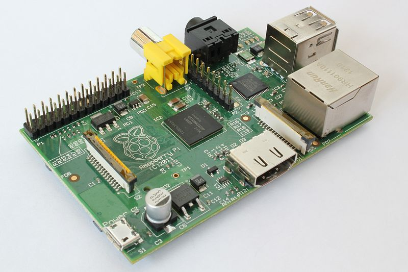

硬體短訊 – Raspberry Pi 單板電腦
最近常聽網友們提到 Raspberry Pi ，引起了筆者的好奇，於是買了一本 「Raspberry Pi快速上手指南」， 發現這是一個大約信用卡大小的板子，卻可以外接「鍵盤、滑鼠、螢幕」等，成為一台完整的電腦。
這塊板子沒有 BIOS，預設採用 SD 卡開機，建議採用 Raspbian 這個作業系統，這是基於 Debian 的 Linux 系統。因此，您可以在上面跑大部分 Linux 可以跑的程式。
Raspberry Pi 採用 ARM 架構的 BroadCom BCM2835 處理器，以下是其實體圖照片：

Raspberry Pi 板子的外型
不知是哪位高人，把 Raspberry Pi 翻譯為「樹莓派」，害我一度以為這個東西是個食品廣告，想說怎麼這麼多 「嵌入式開發者」同時喜歡上這種「派」(就是哪種很多奶油、黏答答的那種，我不是很愛阿！)，而且這讓我想起了 前一陣子突然很多 Maker 都喜歡製造用來分離 Oreo 餅乾與奶油的機器，如下列影片所示：
- Youtube:OREO Separator Machine #1 - Creator: Physicist David Neevel
- Youtube:OREO Separator Machine #2 — Creators: Toy Scientists Bill and Barry
- Youtube:OREO Separator Machine #3 — Creator: Conceptual Artist Collective DENTAKU
- Youtube:OREO Separator Machine #4 — Creator: Robotic Butler HERB
言歸正傳，讓我們回到「樹莓派」上吧！這種派雖然很小，但還是可以跑得動 X-Windows 呢？這個派夠強悍吧！

運行 X window的樹莓派系統
參考文獻
【本文由陳鍾誠取材並修改自維基百科】